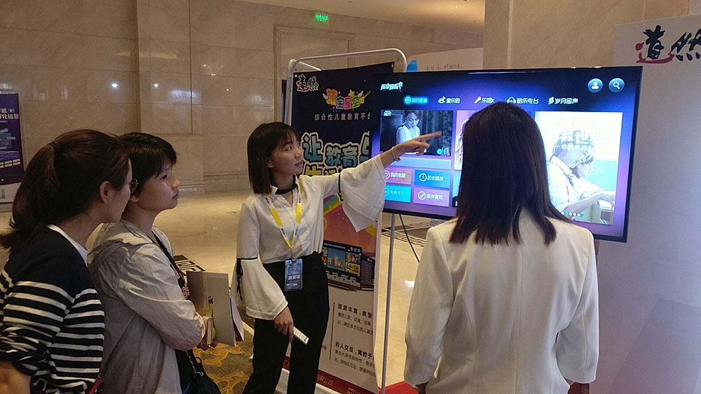
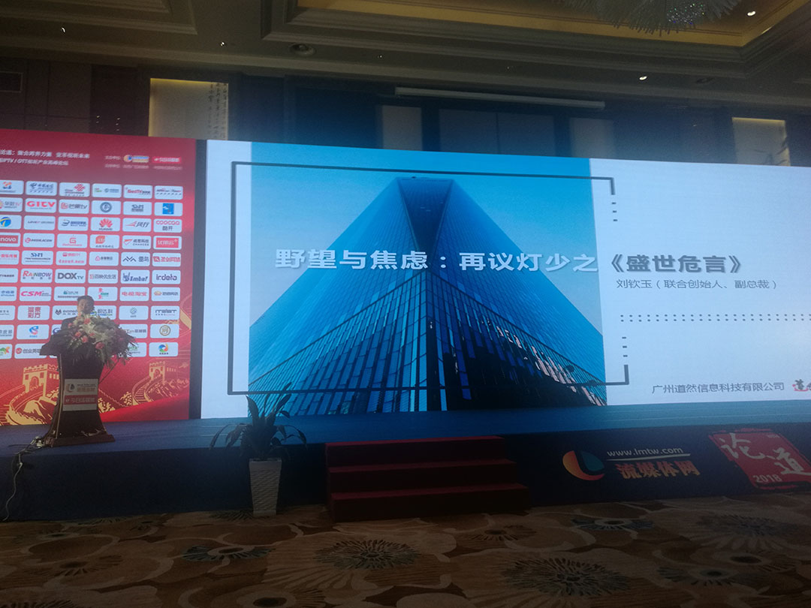
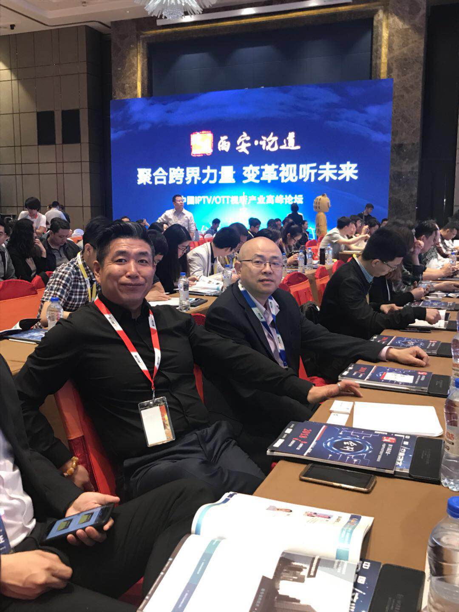
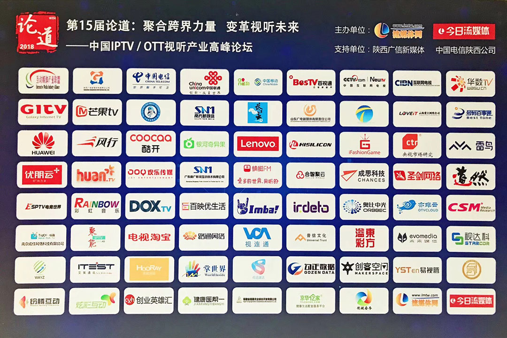
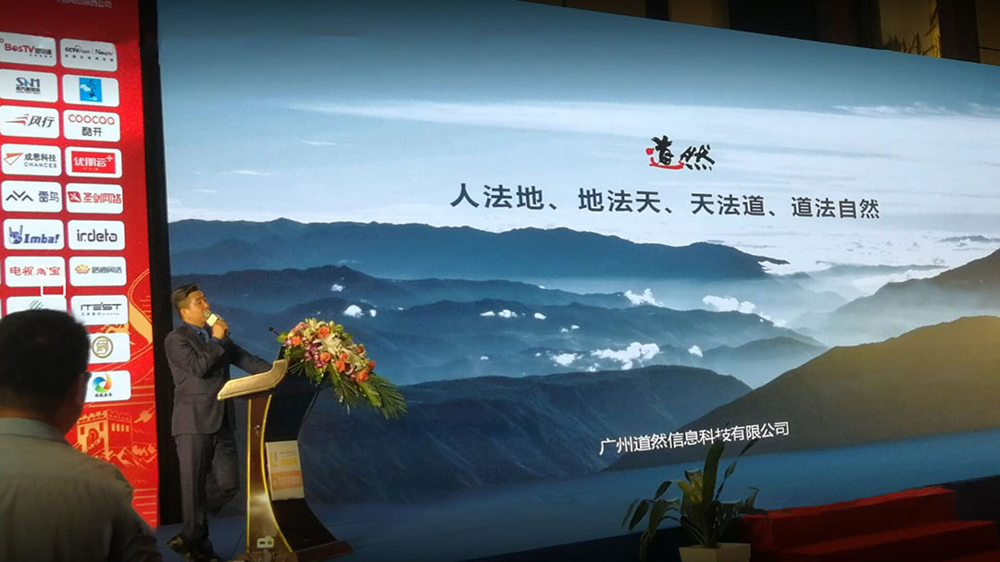

公司受邀参加西安第十五届电视新媒体高峰论坛
来源：广州道然发布时间：2018-05-10
5月9-10日，由流媒体网主办，陕西广信新媒体、中国电信陕西公司协办，以“聚合跨界力量，变革视听未来”为主题的流媒体网第十五届电视新媒体高峰论坛在西安举行。本次论坛汇聚了运营商、牌照方、播控方、技术平台、终端、内容、应用等全产业链的数十家企业参与，包括两大主论坛、六大分论坛、6个圆桌对话环节，与会人数达1000人以上。

5月9-10日，由流媒体网主办，陕西广信新媒体、中国电信陕西公司协办，以“聚合跨界力量，变革视听未来”为主题的流媒体网第十五届电视新媒体高峰论坛在西安举行。本次论坛汇聚了运营商、牌照方、播控方、技术平台、终端、内容、应用等全产业链的数十家企业参与，包括两大主论坛、六大分论坛、6个圆桌对话环节，与会人数达1000人以上。
10日上午，在主题为“聚变2018——跨界融合，视听未来”的主论坛上，广州道然信息科技有限公司联合创始人、副总裁、市场营销中心总监刘钦玉进行了主题为《野望与焦虑：再议灯少之“盛世危言”》的演讲，刘总在演讲中剖析了目前行业发展中遇到的问题，并作了抛砖引玉的解答，最后表达了公司希望和各界同仁一起携手推动电视行业的发展，使中国智能电视行业早日像移动互联网一样，成为让世界为之侧目的一个行业的愿望，得到了与会人员的高度评价。
此次高峰论坛，除了大咖的演讲，还有30余家企业参与的主题核心展区，全程同步开放，无论商务洽谈还是产品展示，都为参会的各方人士带来一场视听的饕餮盛宴。公司也在展区展示了我们的主导产品，包括梨园行、萌宝星空、萌宝绘本屋、乐享音乐等，向参加论坛的同行、合作伙伴和各界人士展示了公司打造家庭娱乐新体验的强大实力，大大提高了公司的知名度和影响力。





上一篇：新员工培训
下一篇：公司召开季度工作会议